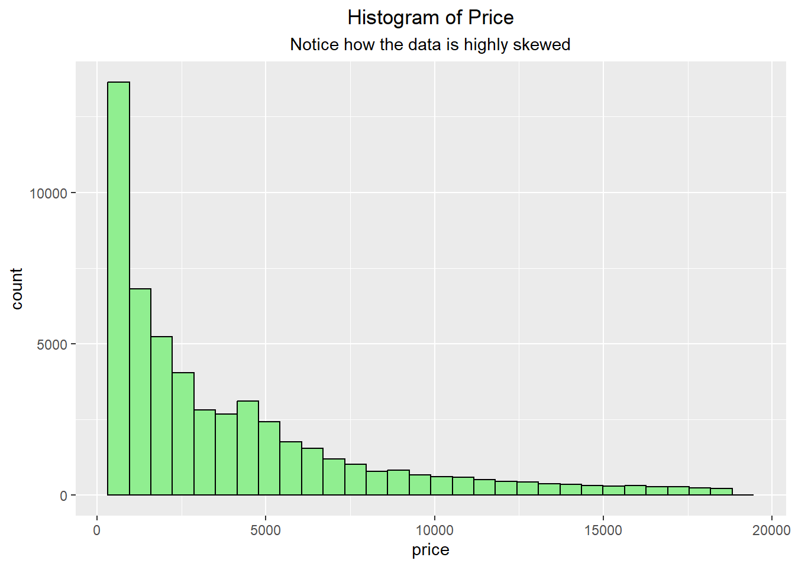
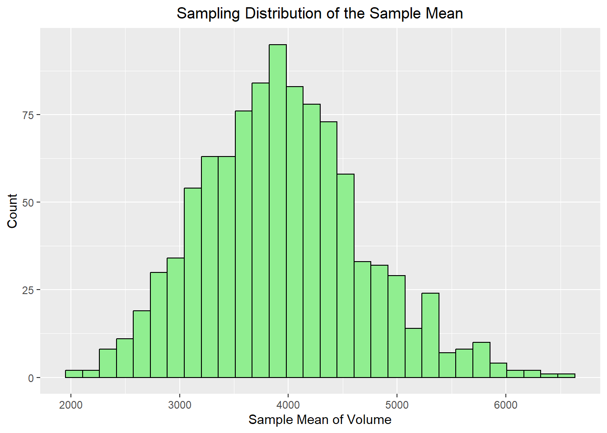
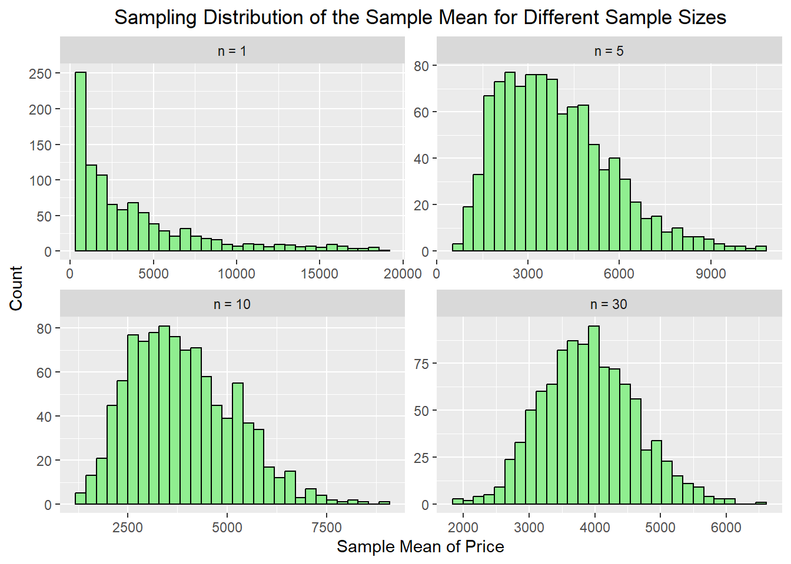
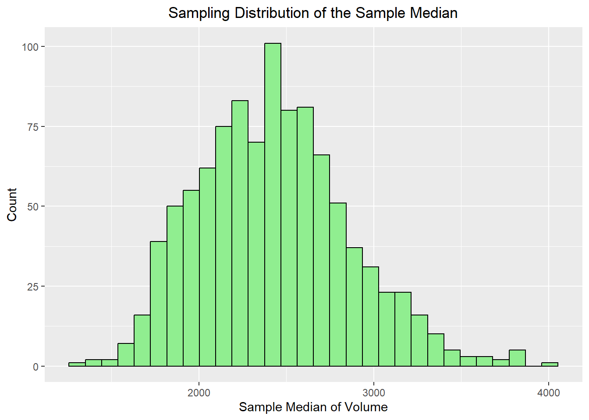
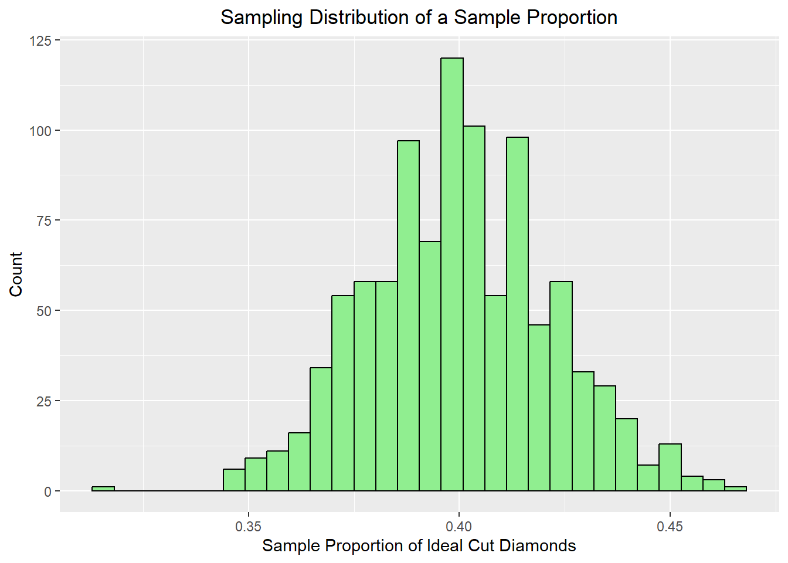
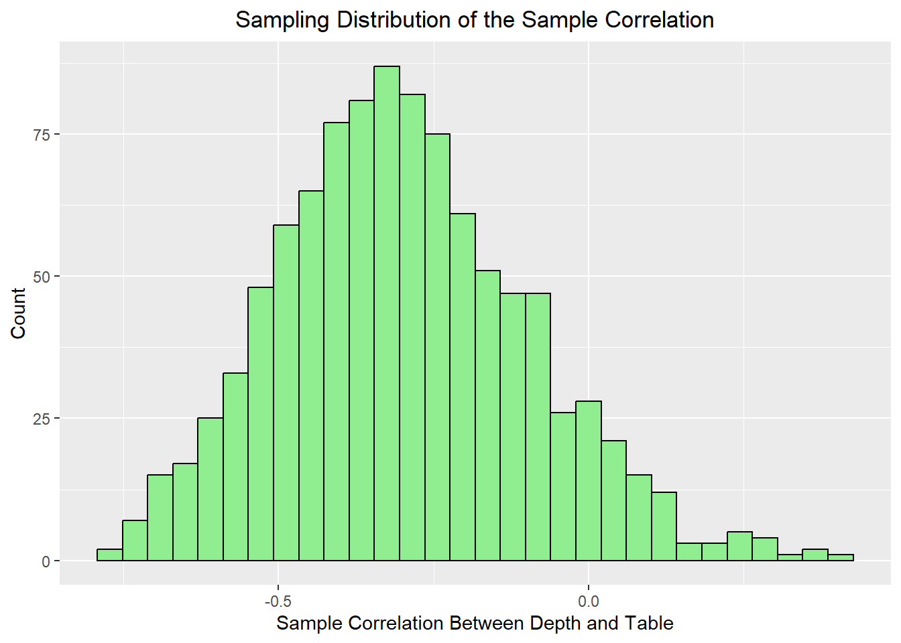

12Sampling Distributions and the Central Limit Theorem
In earlier lessons, we introduced the idea that a sample gives us information about a larger population. In practice, though, one sample is only one possible set of data we could have observed. If we were to repeatedly collect new samples from the same population and compute a summary statistic each time, then those statistics would themselves form a distribution. This is called a sampling distribution, and this idea is extremely important in data science as when we compute a sample mean, sample proportion, median, or correlation, we are not just interested in the single value we got from one dataset. We also want to understand how much that value would vary from sample to sample. Sampling distributions help us answer that question.
Distinguish between the distribution of raw sample data and the sampling distribution of a statistic.
Explain the Central Limit Theorem and describe what it tells us about the sampling distribution of the sample mean.
Use simulation to investigate sampling distributions for statistics such as the mean, median, proportion, and correlation.
Interpret how sample size affects the center, spread, and shape of a sampling distribution.
12.1 Sample Distribution versus Sampling Distribution
It is important to distinguish between two different ideas:
The sample distribution describes the actual values in a single sample.
The sampling distribution describes the values of a statistic computed across many different samples.
For example, suppose we repeatedly take random samples of tree data and calculate the mean volume each time. The original sample data might be skewed or irregular, but the collection of sample means may follow a much more predictable pattern. This is the key idea behind the Central Limit Theorem and why it is so useful in statistics and data science. Your earlier notes already emphasized this difference well, and that distinction is worth keeping in the refresher.
In data science, we rarely care only about the raw data values themselves. More often, we care about summaries such as:
the average value of a variable
the proportion of cases in a category
the median of a skewed variable
the relationship between two variables
If we can understand the sampling distribution of these statistics, then we can better judge whether a result is stable, how much variability to expect, and how to perform inference.
12.2 The Central Limit Theorem
The Central Limit Theorem is one of the most important results in statistics. It tells us that for a sufficiently large sample size, the sampling distribution of the sample mean tends to be approximately normal, even when the original population distribution is not normal.
There are two major ideas to remember:
The center of the sampling distribution of the sample mean is the population mean.
The spread of the sampling distribution becomes smaller as the sample size gets larger.
In symbols, we often summarize this by saying: \[
E(\bar{x}) = \mu \qquad \text{and} \qquad SD(\bar{x}) = \frac{\sigma}{\sqrt{n}}
\]
So, as the sample size increases, the sample means tend to cluster more tightly around the true population mean.
In a traditional statistics course, the Central Limit Theorem is usually introduced only for the sample mean. In a data science course, it is helpful to think more broadly. The bigger idea is this:
When we repeatedly sample data and compute a statistic, that statistic has a sampling distribution.
The sample mean is the most famous example, but it is not the only one. We can also examine the sampling distributions of:
sample proportions
sample medians
sample standard deviations
sample correlations
regression slopes
Some of these have cleaner mathematical results than others, but they all reinforce the same idea: statistics vary from sample to sample, and repeated sampling helps us understand that variability.
12.3 Using Simulation to Study Sampling Distributions
Because we usually do not know the exact population distribution, simulation is a powerful way to study sampling distributions. In a data science workflow, we can repeatedly sample observations from a dataset, compute a statistic each time, and then visualize the distribution of those results. For the examples below, we will use the diamonds dataset from the ggplot2 library.
We can see with the data that it is highly skewed and not symmetric.
library(ggplot2)ggplot(diamonds, aes(x=price)) +geom_histogram(bins=30, fill="lightgreen", color="black") +labs(title ="Histogram of Price", subtitle="Notice how the data is highly skewed") +theme(plot.title =element_text(hjust=0.5),plot.subtitle =element_text(hjust=0.5))

To make repeated sampling easier, we will use the following user-built functions. The first function is designed for one-variable statistics such as the mean, median, standard deviation, or interquartile range. The sampling_distribution() function takes a single vector of data, repeatedly samples from it with replacement, computes a summary statistic for each sample, and returns the resulting sampling distribution.
The second function is designed for bivariate statistics such as correlation or regression slope. The sampling_distribution_bivariate() function works similarly to the first function, but instead of sampling from a single vector, it samples rows from a data frame. This allows us to preserve the pairing between two variables when calculating bivariate statistics such as correlation or regression slope.
We begin with the sample mean, since this is the statistic most directly connected to the Central Limit Theorem. The code below repeatedly takes a sample of size 30 from the dataset and calculates the mean price. It then stores the results and repeats the process 100 times, which then results in the distribution of sample means.
Population mean: 3932.8
Sampling distribution mean: 3943.55
Population SD/sqrt(n): 728.37
Sampling distribution SD: 743.99
ggplot(mean_df, aes(x = stat)) +geom_histogram(bins =30, fill="lightgreen", color="black") +labs(title ="Sampling Distribution of the Sample Mean",x ="Sample Mean of Volume",y ="Count") +theme(plot.title =element_text(hjust=0.5))

Notice what we expect to happen:
the distribution should be centered near the population mean
the distribution should have less variability than the raw data
the distribution of sample means often looks approximately bell-shaped
12.5 How Large Does the Sample Size Need to Be?
One important idea behind the Central Limit Theorem is that the sample size must be large enough for the sampling distribution of the sample mean to become approximately normal. If the original population is skewed, then smaller sample sizes may still produce a sampling distribution that is somewhat skewed. As the sample size increases, the sampling distribution of the mean tends to become more symmetric and bell-shaped.
To explore this idea, we will use the sampling_distribution() function with diamonds$price, which is a strongly right-skewed variable.
mean_n1 <-sampling_distribution(diamonds$price, sample_size =1, n_samples =1000, FUN = mean)mean_n5 <-sampling_distribution(diamonds$price, sample_size =5, n_samples =1000, FUN = mean)mean_n10 <-sampling_distribution(diamonds$price, sample_size =10, n_samples =1000, FUN = mean)mean_n30 <-sampling_distribution(diamonds$price, sample_size =30, n_samples =1000, FUN = mean)mean_compare <-tibble(`n = 1`= mean_n1, `n = 5`= mean_n5, `n = 10`= mean_n10, `n = 30`= mean_n30) |>pivot_longer(everything(), names_to ="sample_size", values_to ="stat") |>mutate(sample_size =factor(sample_size, levels =c("n = 1", "n = 5", "n = 10", "n = 30")))ggplot(mean_compare, aes(x = stat$stat)) +geom_histogram(bins =30, fill="lightgreen", color="black") +facet_wrap(~ sample_size, scales ="free") +labs(title ="Sampling Distribution of the Sample Mean for Different Sample Sizes",x ="Sample Mean of Price",y ="Count") +theme(plot.title =element_text(hjust=0.5))

Notice that the sampling distribution for n = 5 may still show some skewness because the original population of diamond prices is highly skewed. By the time we reach n = 10, the distribution often looks more symmetric, and for n = 30, it tends to look even more bell-shaped. This demonstrates the main idea of the Central Limit Theorem: even when the population distribution is not normal, the sampling distribution of the sample mean becomes more nearly normal as the sample size increases. Also notice how the spread of the data becomes more compact as the sample size increases.
12.6 Sampling Distribution of the Median
The mean is useful, but in data science we often work with skewed data, where the median may be a better summary of center. We should note that the median also has a sampling distribution just like the mean. It does not have a “nice” formula for us to follow like the mean does, but it still becomes more stable as the sample size increases. This is an important reminder that the idea of a sampling distribution applies to many summary statistics, not just the mean.
Population median: 2401
Sampling distribution median: 2407.25
Population IQR 4374.25
Sampling distribution IQR: 572.75
ggplot(median_df, aes(x = stat)) +geom_histogram(bins =30, fill="lightgreen", color="black") +labs(title ="Sampling Distribution of the Sample Median",x ="Sample Median of Volume",y ="Count") +theme(plot.title =element_text(hjust=0.5))

12.7 Sampling Distribution of a Sample Proportion
Now suppose we create a binary variable indicating whether or not a diamond has an Ideal cut.
We can now repeatedly sample from this dataset and compute the proportion of diamonds in each sample that are classified as having an Ideal cut.
For the sample proportion, the sampling distribution is centered at the true population proportion \(p\). When the observations are independent, the standard error is: \[
SE(\hat{p}) = \sqrt{\frac{p(1-p)}{n}}
\]
Population proportion: 0.39954
Sampling distribution proportion: 0.40002
Population SE 0.0219
Sampling distribution SE: 0.02163
ggplot(prop_df, aes(x = stat)) +geom_histogram(bins =30, fill="lightgreen", color="black") +labs(title ="Sampling Distribution of a Sample Proportion",x ="Sample Proportion of Ideal Cut Diamonds",y ="Count") +theme(plot.title =element_text(hjust=0.5))

This is useful because many data science problems involve proportions: click-through rates, conversion rates, proportions of customers in a category, and so on. The sample proportion has its own sampling distribution, and for large enough samples it is often approximately normal as well.
12.8 Sampling Distribution of a Correlation
In a data science course, we are often interested in relationships between two variables. One natural extension is to look at the sampling distribution of a correlation.
cor_df <-sampling_distribution_bivariate(diamonds, x ="depth", y ="table",sample_size =30, n_samples =1000, FUN = cor)ggplot(cor_df, aes(x = stat)) +geom_histogram(bins =30, fill="lightgreen", color="black") +labs(title ="Sampling Distribution of the Sample Correlation",x ="Sample Correlation Between Depth and Table",y ="Count") +theme(plot.title =element_text(hjust=0.5))

This helps reinforce that bivariate summaries also vary from sample to sample. Even if the underlying relationship is strong, the exact sample correlation will change depending on which observations are included. Repeated sampling helps us understand how much variation is typical.
12.9 Comparing Several Statistics at Once
We can also compare multiple sampling distributions side by side.
This makes it easier to see that different statistics have different centers and different amounts of variability, even when they are all computed from the same underlying dataset.
The main idea to remember is not just the Central Limit Theorem itself, but the broader concept of a sampling distribution. A sample statistic is not fixed across repeated samples. If we repeatedly draw samples and recompute the same statistic, we get a distribution of possible values. For the sample mean, the Central Limit Theorem tells us that this distribution is often approximately normal for large enough samples. But the same repeated-sampling idea also applies to proportions, medians, correlations, and many other summaries that are useful in data science. This is one of the reasons simulation is so helpful. It allows us to see these ideas directly, even when the mathematics becomes more complicated.